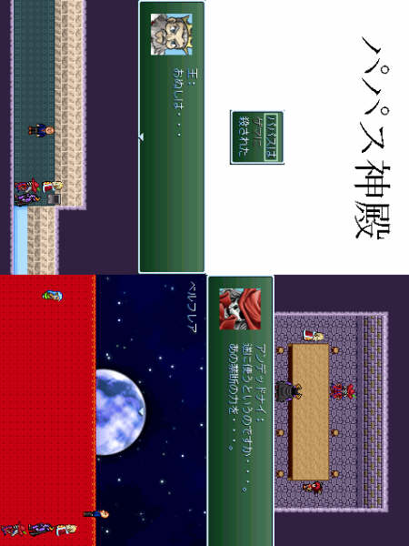

| No,088 【パパス神殿】 |
| ダウンロード（761KB） |
 |
| 【ＨＮ】 うひょー神アルベルト≡エターナール 【コメント】 始まりの時、世界にはただ「無」のみがあった。 その後ビッグバンが発生し・・・ 宇宙ができ・・・ 地球ができ・・・ 命が生まれた・・・ やがて命は時と共に進化し・・・ 「知性」を持つ人と魔族が生まれた・・・ そして「知性」を持つ者は 「それ」へとたどり付いた・・・ 「それ」はこの世界にあってはならなかったものなのかもしれない・・・ それは１人の男を狂気へと走らせ 多くのものを彼と彼の周囲から奪ったのだ・・・ 我々は彼のことを 決して忘れはしないだろう・・・ 「それ」の犠牲となった哀れな男のことを・・・ 引用：ゲーム「パパス神殿」より |
| 【管理人コメント】 誰もがこのＳＳを見て首をかしげるなｗｗｗｗｗ この発想は無かった |